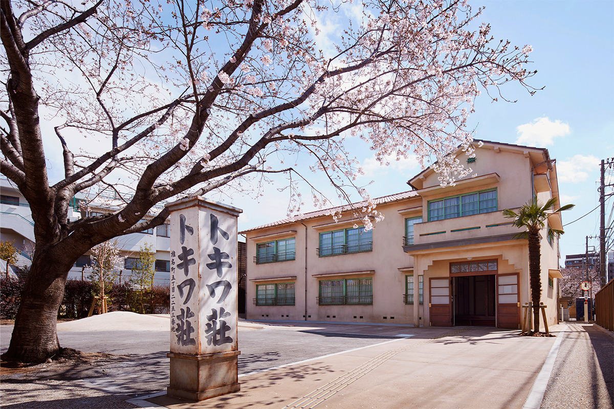
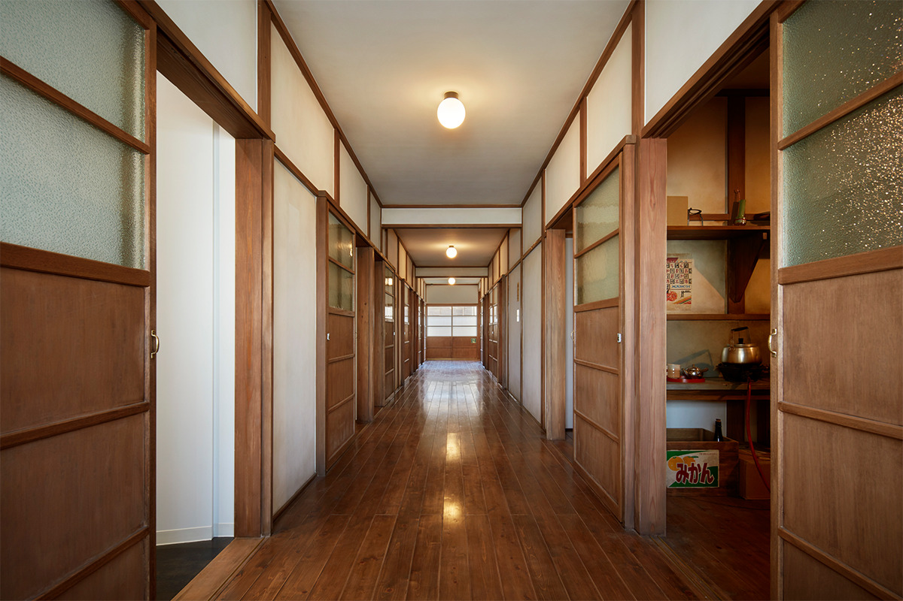
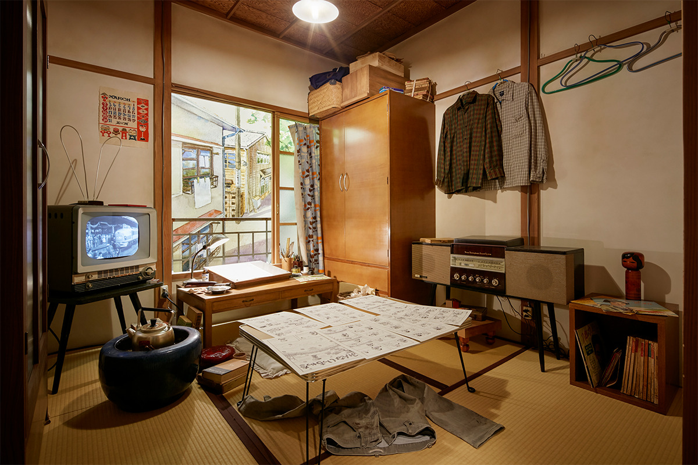
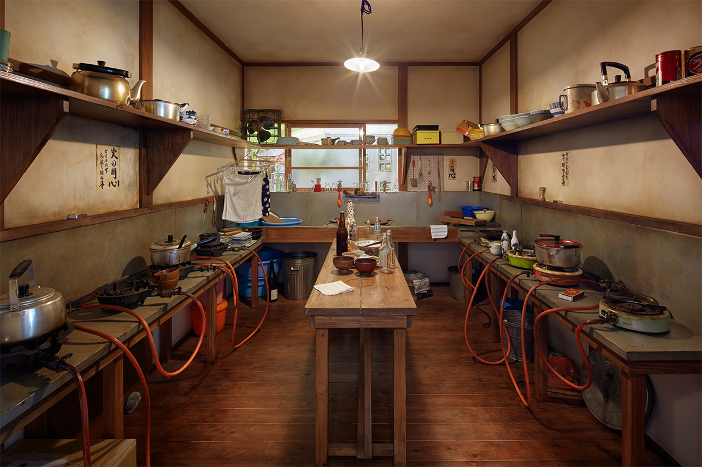
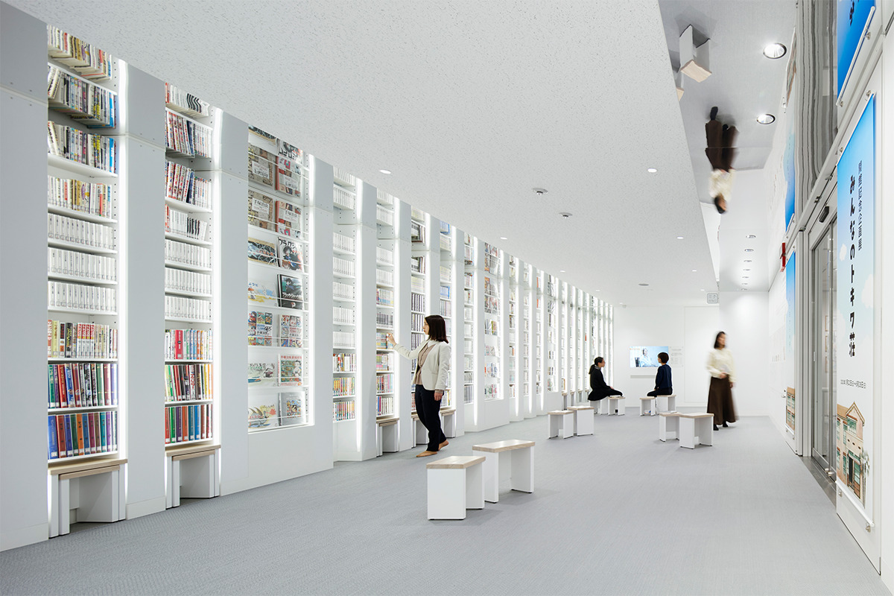
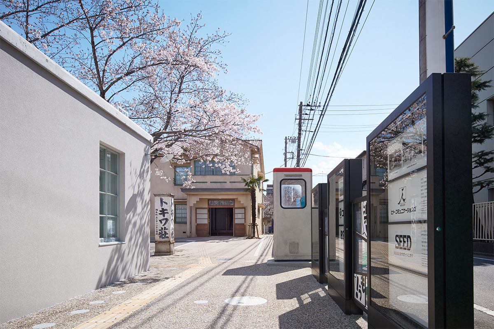
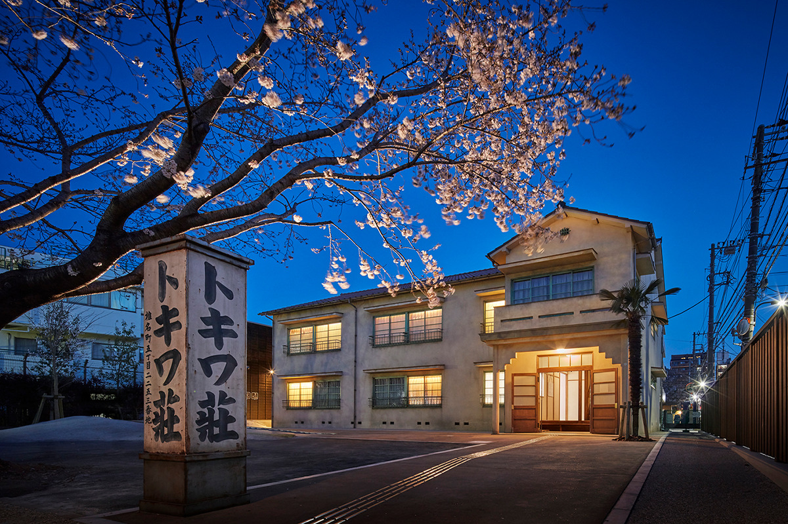

Токио · Тосима · музей манги
«Токива-со» в Тосиме: дом, где молодые классики манги жили по соседству

Легендарным домом манги называют «Токива-со»: здесь в молодости жили художники, которые потом стали классиками. Дом снесли в 1982 году, а в 2020 году в том же квартале открылся музей, где здание восстановили таким, каким оно было.
История
Легендарный дом художников манги
В «Токива-со» прошла молодость художников, которыми гордится японская манга. Здесь жил Осаму Тэдзука (1928–1989), «бог манги» и автор «Астробоя», а также Фудзио Акацука (1935–2008), мастер комической манги, и Сётаро Исиномори (1938–1998), создатель «Киборга 009». Жили здесь и Фудзико Ф. Фудзио (1933–1996), автор «Дораэмона», и Фудзико Фудзио А (1934–2022): два друга, которые долго рисовали вместе под общим псевдонимом.
В декабре 1982 года дом разобрали. По фотографиям и документам его точно восстановили, и в 2020 году открылся Музей манги «Токива-со» района Тосима. Снаружи и внутри здание выглядит как при жильцах, а ещё здесь проходят выставки и события о манге и аниме.
Музей хочет передать сегодняшним гостям чувства и энергию тех лет, а район Тосима строит вокруг манги и аниме свою местную культуру.

Квартал
Прогулка по Минами-Нагасаки
Музей стоит в Минами-Нагасаки, квартале района Тосима, и вокруг него весь квартал стал маршрутом о манге: проект называется «Минами-Нагасаки Мангаленд». На улице «Токива-со», которая проходит перед музеем, есть место отдыха, где продают товары музея, и «Токива-со манга стейшн»: там можно взять в руки и почитать работы художников, связанных с домом.
На месте, где стоял настоящий «Токива-со», поставили памятный знак. Рядом сохранился дом «Сиун-со», где Фудзио Акацука жил и работал. По кварталу расставлены скульптуры по мотивам манги бывших жильцов, и до сих пор работает китайский ресторан, куда они постоянно ходили.
Интерьер
Комнаты, где рождалась легенда
Здание и залы проектировала компания TANSEISHA. До этого она работала над Музеем манги Исиномори в префектуре Мияги и обновлением Музея манги Масуда в префектуре Акита.
Проектировщики изучили книги о «Токива-со», старые фотографии и расспросили тех, кто знал дом. Они хотели передать не только здание, но и дух времени, быт художников и ощущение, будто здесь только что рисовали, поэтому каждую деталь воспроизвели как можно точнее.

В музее два этажа. На втором восстановлены комнаты художников 1950–1960-х годов и общая кухня, здесь же показывают инструменты для рисования манги и рассказывают историю квартала, где стоял дом.

На первом этаже зал временных выставок, где проходят выставки и события о манге и аниме. В «манга-лаундже» показывают хронологию манги и книги, а на экранах идут интервью.

Снаружи
Телефонная будка и стеклянный туалет
Стоит посмотреть и на то, что вокруг здания. Прямо перед домом стоит телефонная будка, а в центре парка общественный туалет со стеклянным фасадом, на котором написаны звукоподражания из манги.


В 2026 году на сайте музея можно заранее забронировать время посещения. Бронь даёт приоритет при входе, а без неё пускают, если есть места.
Музей манги «Токива-со» района Тосима
- Адрес
- Токио, район Тосима, Минами-Нагасаки, 3-9-22, в парке Минами-Нагасаки Ханасаки
- Телефон
- +81 3-6912-7706 (10:00–17:00, кроме понедельника)
- Часы работы
- 10:00–18:00, вход до 17:30
- Выходные
- понедельник (если это праздник, то следующий будний день), новогодние праздники и дни смены выставок
- Цены / Вход
- во время специальных выставок вход платный
- Сайт
- tokiwasomm.jp
Фото: Forward Stroke.